Project: SplitSmart (Project A), an Android app for recording and splitting shared expenses between USC students and alumni.
Team number: 04
Team members: Zachary Chung (zchung@usc.edu), Aux Devarapalli (adevarap@usc.edu), Edward Zhao (ebzhao@usc.edu), Swayam Parekh (swayampa@usc.edu), Brian Shi (brianshi@usc.edu)
This is the implementation document that goes with our Project 2.3 code and demo video. The point of it is to show where the app we actually built differs from the design we turned in for Project 2.2, explain why we changed those things, and list the requirements from Project 2.1 that we had to clarify, change or decided to add. The diagrams in Sections 4 and 5 are the updated versions of the 2.2 figures and they match the code in the ZIP we submitted.
It's written for our customer TA (Yuzhou Fang), the CSCI 310 course staff, and for us, since it's the easiest way to remember why the code looks the way it does.
To make the changes easy to spot we gave each one a short label: A1, A2, ... for architecture changes, D1, D2, ... for detailed design changes, and R1, R2, ... for requirement changes. In the diagrams, anything in bold is new or changed since 2.2 (changed items say what they used to be), anything struck through was removed, and plain text is unchanged; in the class diagrams, classes that are new since 2.2 are marked «new» and static members are underlined, as usual in UML. We kept the same component numbers (C1 to C6) and the same figure numbers as the 2.2 document so the two can be read side by side: Figure 1 is the block diagram, Figures 2a to 2i replace the single class diagram (2.2 Figure 2), Figures 3 to 7 replace the five sequence diagrams, and Figures 8 to 10 are new.
SplitSmart is a native Android app written in Java (package com.team04.splitsmart, Android 8.0 / API 26 and up) that uses Firebase Authentication for accounts and Cloud Firestore as the shared database. Everything in the customer description is in: accounts and groups, adding and editing expenses, the three split methods with the cent rounding rule, pairwise balances, settlements, the searchable history and the monthly summary (FR 1.1 through FR 5.7), plus all four non-functional requirements. We also built two of the optional extensions from the customer description: members can be removed, leave, or be made the owner, and screens update live when someone else in the group changes something. After checking the app against the customer's demo checklist we made two more changes: either side of a payment can now record a settlement, and the history search has a Match case option (R9, R13).
The design from Project 2.2 held up pretty well. The app still has the same six components in the same three layers, MVVM on the presentation side, repositories as the only classes that touch Firebase, money stored as integer cents, and balances recomputed from the transaction history every time instead of being stored. The business logic layer still has zero Android or Firebase imports, which is what let us put 74 JUnit tests on it.
The things we did change fall into a few buckets. Some were about keeping shared data safe: the order we register an account in, security rules that check what's being written and not just who's writing it, and re-checking the settlement limit right before saving. Some were things you only find out an Android app needs once you build one: somewhere to construct the shared objects, a way to turn Firebase exceptions into messages a person can read, base classes so every screen doesn't repeat the same setup, and immutable model objects. The rest were method signatures we had left vague in 2.2, a handful of requirement details that only came up when we built the forms or went through the demo checklist, and the two extensions. Section 4 covers the architecture changes, Section 5 the detailed design changes with all the revised diagrams, and Section 6 the requirements.
All six components from 2.2 are still there doing what we said they would. One class got added above them.
| ID | Component | What changed |
|---|---|---|
| C1 | UI Views | Shared base classes; the group screen got a fourth tab for members (D1); the settlement form has “I paid” / “I was paid” (R9); a Match case chip in the history (R13) |
| C2 | ViewModels | One-time Event messages and a few small state classes (D3); ViewModels now load their own data from ids (D2) and own the live update subscriptions (A5); settlements can be recorded from either side (R9) |
| C3 | Business Logic and Model | Validation and formatting: more validators, length limits, a cap on amounts, month arithmetic (D4), and settlement messages for the member who was paid (R9) |
| Split engine: same interface; percentage rounding skips 0% participants (R4) | ||
| Balance engine: added the “amount owed” helper that caps a settlement, and per-group totals (D4) | ||
| History and summary engine: renames, small additions (D4) and the Match case option (R13) | ||
| Domain model: everything immutable now; display text moved out of the model (D5) | ||
| C4 | Repositories | Error translation (A2); new registration flow (A3); snapshot listeners (A5); removing members and transferring ownership (A6); one mapper class for the schema (D6) |
| C5 | Firebase Authentication | Unchanged |
| C6 | Cloud Firestore | Rules now validate contents, let the owner delete a whole group (A4), let either side of a payment record it (R9) and let members leave (A6); listeners push changes to phones (A5); three extra fields (Section 5.4) |
| SplitSmartApp (new) | Application class | The Application class that builds the shared objects once per process (A1) |
Figure 1 at the end of this section is the revised block diagram. The layering rules from 2.2 still hold. Views only talk to ViewModels, ViewModels use the engines and the repositories, and only the repositories touch Firebase. We actually checked that last one with a grep: nothing outside the .data package imports com.google.firebase. The one new thing in the picture is the dashed arrow from Firestore back into the repositories, which is how live updates come in (A5).
A1. An Application class owns the shared objects (new). In 2.2 we made AppContainer a singleton with a static getInstance(). We changed it to a normal object that SplitSmartApp (our Application subclass) creates once when the process starts. Activities and ViewModels get destroyed and recreated on rotation, so the container needed to live in something with the lifetime of the whole process. Passing it into ViewModelFactory as a constructor argument instead of grabbing a global also means tests can hand a ViewModel fake repositories, which is what we wanted in 2.2 but never quite set up. SplitSmartApp also checks whether google-services.json exists, and if it doesn't the app opens on a “Firebase setup needed” screen instead of crashing. That let everyone on the team build the project and run the unit tests before we had the shared Firebase project set up.
A2. Repositories translate Firebase errors (new). No Firebase exception gets out of the data layer anymore. A small class called FirebaseErrors turns each one into a RepositoryException with a message meant for the user (“You appear to be offline”, “An account with this USC email already exists”) and a flag for whether the thing is permanently gone. We added this because without it every ViewModel that wanted to tell “deleted” apart from “no internet” would have had to look at Firestore exception types, which breaks the rule that only repositories know about Firebase. The distinction matters in practice: when the owner deletes a group on another phone, your screen for that group closes itself, but a network hiccup just shows a message.
A3. Registration creates the login first (changed). In 2.2 the app read uscIds/{uscId} before creating the Firebase login, then wrote the profile and the USC ID reservation in a transaction. When we wrote the security rules we realized that order forces signed-out users to have read access to uscIds, so anyone could probe which USC IDs are registered, which goes against NFR 4. It also left a gap between the check and the write. Now the login is created first, the USC ID is checked and reserved inside one Firestore transaction, and if the ID turns out to be taken (or the write fails for any other reason) we delete the half-created login again so the email can be reused. Figure 3 shows the new flow.
A4. Security rules check contents, not just access (changed). All the access rules from 2.2 Section 5.3 are in firestore.rules, and on top of that the rules now validate what's being written: a profile needs a @usc.edu email that matches the login and a 10-digit USC ID, and only its name can change later; an expense needs a positive total, at least two participants who are all members, and a payer who is one of them; a settlement has to be recorded by its payer or its receiver, never by a third member, and has to be between two different members (R9); and a transaction's creator and type can never change. We also let the group owner delete any transaction in the group. That one fixes a contradiction we didn't catch in 2.2: FR 1.7 says deleting a group deletes all of its expenses and settlements, but our own rule “only the creator can delete a transaction” would have made a group with other people's expenses in it impossible to delete. The app only ever uses that permission when deleting the whole group, so in the UI it's still creator-only (FR 2.7, FR 5.3). The rules have 29 automated tests against the Firestore emulator.
A5. Live updates (new). GroupRepository and TransactionRepository can register Firestore snapshot listeners and hand back a Subscription. GroupViewModel watches the open group and its transactions and GroupListViewModel watches the user's groups, and when another phone changes something, the screen reloads through the same code path as the Refresh button. The first snapshot and the phone's own unsaved writes are ignored so you don't reload for your own changes, and subscriptions get removed in onCleared(). NFR 3 only says changes have to show up after a refresh, but in an app about who owes who it felt wrong for someone staring at the balances to miss a new expense, and it was one of the suggested extensions. Wrapping the listener in Subscription keeps Firebase types inside the data layer, and because the reload reuses the existing code, none of the engines had to change and the screens only had to start the updates and reuse their refresh method (Figure 10).
A6. Members can leave and ownership can move (changed). The 2.2 rules fixed the owner forever and only ever added members. They now let the owner remove other members (as long as the owner stays), let the owner hand ownership to an existing member, and let any non-owner remove themselves and nothing else. A security rule can't add up a group's transactions, so the “are they settled up” check happens in GroupViewModel against freshly loaded data before the write, and the rules take care of the structural stuff: a group always has an owner who is a member, and a member who isn't the owner can't remove anyone but themselves. Old transactions keep the former member's id, so the history and balances for everyone else stay correct (Figure 9).
Everything else about the architecture is the same as 2.2: one shared database, relaxed layering, async repository calls through DataCallback, cents everywhere, and pairwise balances that are never stored and never simplified across pairs.
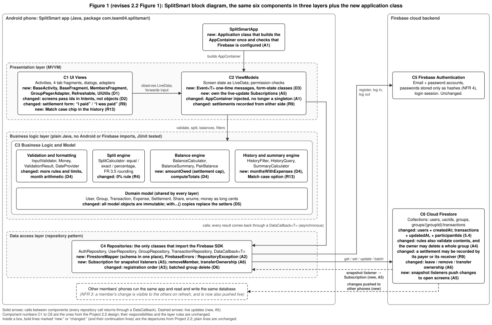
All packages are under com.team04.splitsmart. As in 2.2, C3 is one component whose classes are split into five packages. Classes marked “new” weren't in the 2.2 class table. Every other class kept its 2.2 name, and we didn't drop any.
| Component | Package | Classes |
|---|---|---|
| Application | (root) | SplitSmartApp (new) |
| C1 UI Views | .ui | LoginActivity, RegisterActivity, GroupListActivity, ProfileActivity, GroupFormActivity, GroupDetailActivity, HistoryFragment, BalanceFragment, SummaryFragment, ExpenseFormActivity, SettlementFormActivity, TransactionDetailActivity, ConfirmDialog; new: BaseActivity, BaseFragment, MembersFragment, GroupPagerAdapter, GroupAdapter, TransactionAdapter, Refreshable, SimpleTextWatcher, UiUtils |
| C2 ViewModels | .viewmodel | BaseViewModel, AuthViewModel, ProfileViewModel, GroupListViewModel, GroupViewModel, ExpenseViewModel, SettlementViewModel, TransactionDetailViewModel, BalanceViewModel, HistoryViewModel, SummaryViewModel, ViewModelFactory, AppContainer; new: Event, GroupListItem, ParticipantRow, SplitStatus, MemberOption, FormerMembers |
| C3 Business Logic and Model | .logic.validation (Validation and Formatting) | InputValidator, ValidationResult, Money, InvalidAmountException, DateProvider |
.logic.split (Split Engine) | SplitCalculator | |
.logic.balance (Balance Engine) | BalanceCalculator, BalanceSummary, PairBalance | |
.logic.history (History and Summary Engine) | HistoryFilter, HistoryQuery, SortOrder, SummaryCalculator, MonthlySummary | |
.model (Domain Model) | User, Group, Transaction, Expense, Settlement, Share, Category, SplitMethod, TransactionType | |
| C4 Repositories | .data | AuthRepository, UserRepository, GroupRepository, TransactionRepository, DataCallback; new: FirestoreMapper, FirebaseErrors, RepositoryException, Subscription, FirebaseEmulators |
| C5 Firebase Authentication, C6 Cloud Firestore | Firebase SDK | FirebaseAuth only inside AuthRepository; FirebaseFirestore, DocumentSnapshot and (new) ListenerRegistration only inside .data |
These replace the single class diagram from 2.2 (Figure 2). It is split by package so the text stays readable: Figures 2a to 2c are the C3 packages, 2d and 2e are C4, 2f and 2g are C2, and 2h and 2i are C1.
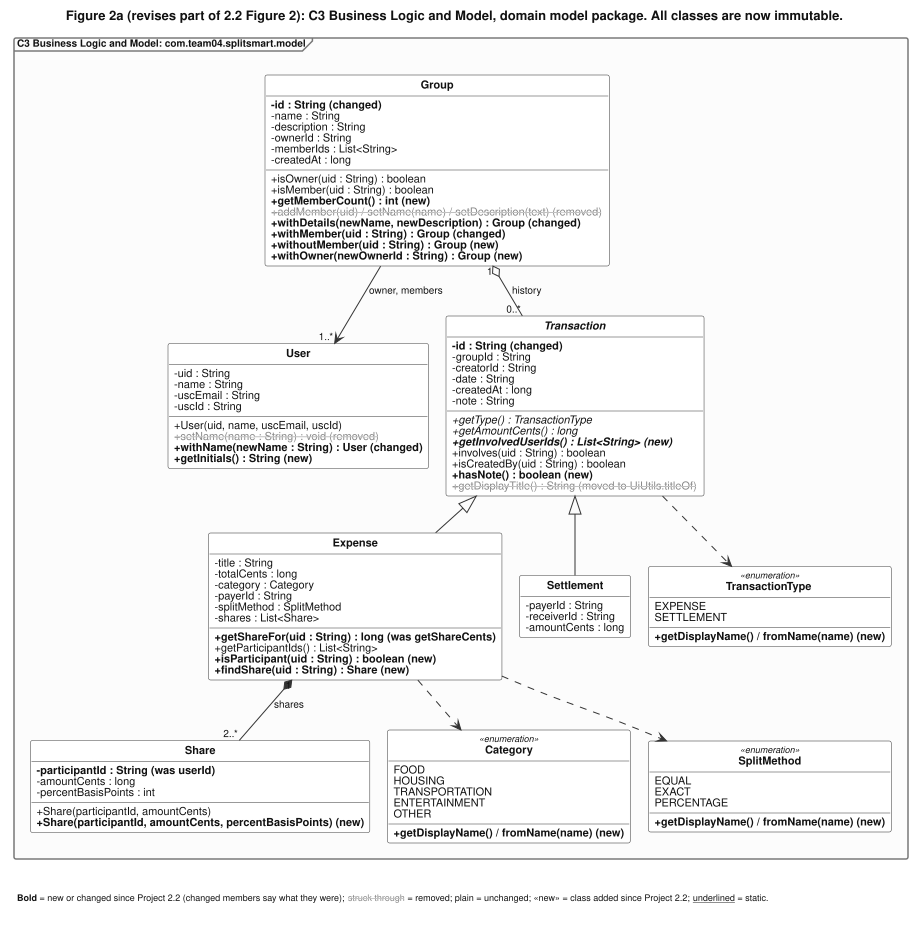
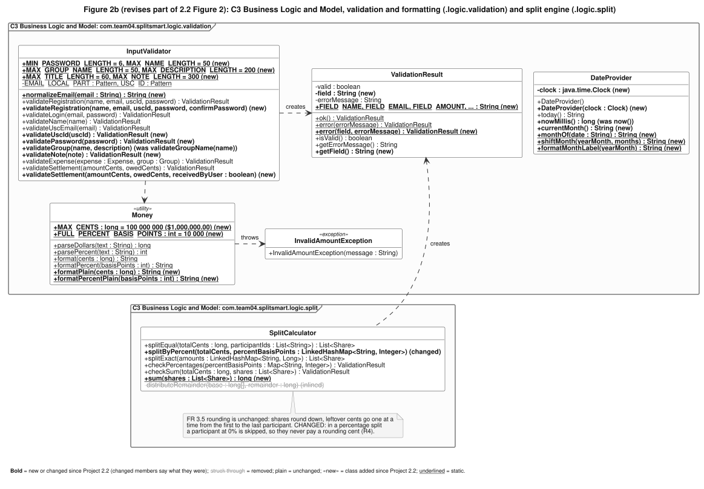
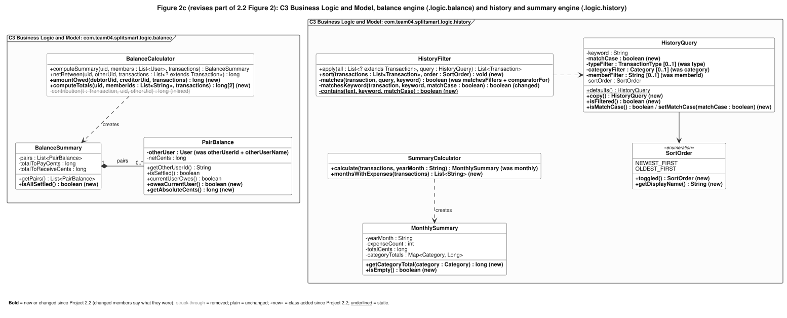
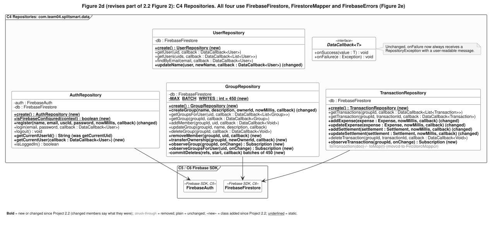
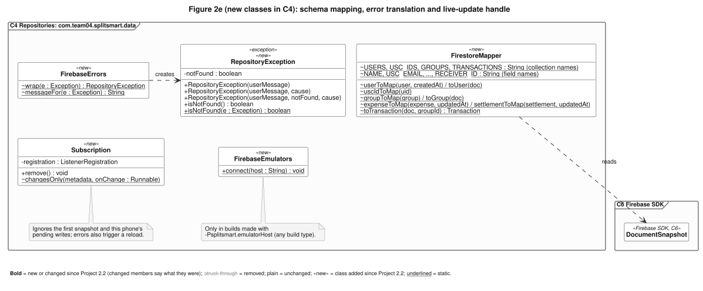
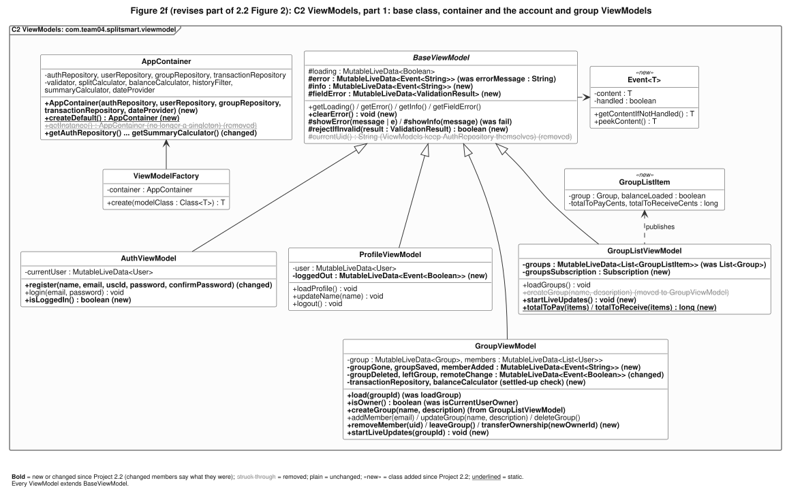
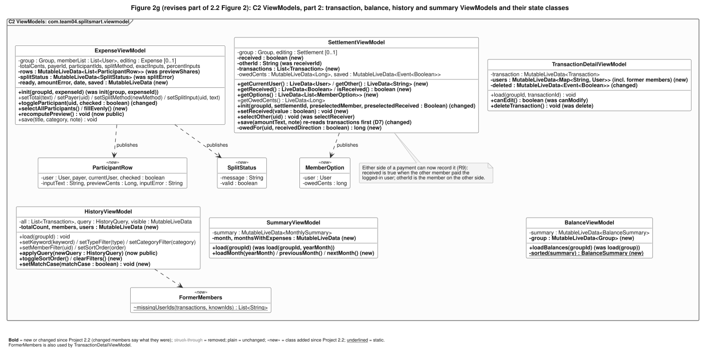
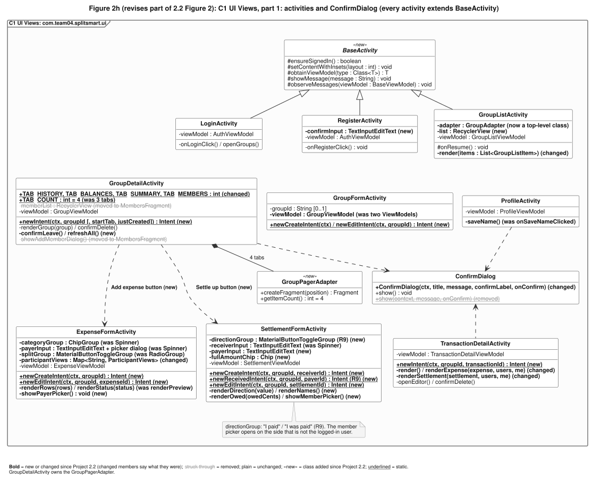
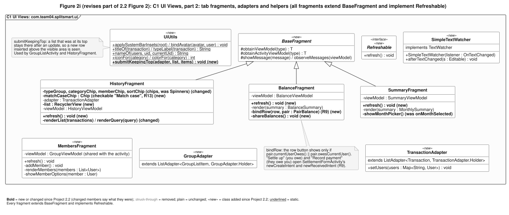
D1. Screens (C1, Figures 2h and 2i). Every screen needed the same setup: get its ViewModel from the factory, check the user is still signed in, show snackbar messages, and pad for the system bars (apps targeting Android 15 draw edge to edge, so without this the content slides under the status bar). We pulled all of that into BaseActivity, and the ViewModel and message parts into BaseFragment for the tabs. The group screen changed the most. In 2.2 we drew three tabs plus a member list and an add-member dialog sitting inside the activity itself. We moved the members into a fourth tab (MembersFragment) that shares the activity's GroupViewModel, added fixed “Add expense” and “Settle up” buttons, and put Refresh, Edit, Delete and Leave in the toolbar menu. The group list and history adapters became real ListAdapter classes instead of the inner classes we had planned, because the rows grew (amounts, avatars, icons) and DiffUtil gives us animated live updates for free; when a new row arrives above what you're looking at, UiUtils.submitKeepingTop keeps the list scrolled to the top so you see it. Refreshable is a one-method interface so the Refresh action and the live update event can reload whichever tabs happen to exist. In the forms we swapped the spinners and radio group from 2.2 for Material chips (category, with Other preselected), picker dialogs (payer, and the other member in a settlement) and a toggle group (split method). Spinners inside a scrolling form were flaky on some devices and the dialogs are easier to tap. The settlement form also got an “I paid” / “I was paid” toggle (R9); its picker shows how much you owe each person, or how much each person owes you, and the balance page has “Settle up” next to people you owe and “Record payment” next to people who owe you. The history got a “Match case” chip (R13). The USC ID field accepts letters and the expense and settlement amount fields accept a minus sign, so a wrong value (letters in a USC ID, a negative amount) gets a specific error message from the validator instead of being silently blocked by the keyboard. ConfirmDialog now takes a title and a button label so each confirmation reads properly (for example the title Delete “Road Trip”? with a Delete button, or Leave “Road Trip”? with a Leave button). The “Settlement” label that 2.2 put in Transaction.getDisplayTitle moved to UiUtils with the other display helpers.
D2. Screens pass ids, ViewModels load objects. In 2.2 the activities handed a loaded Group object to the form ViewModels (init(group, ...), BalanceViewModel.load(group)). Android only really passes simple values between screens, so every screen that works on a group or a transaction now has a static newIntent style factory that puts ids in the Intent, and each ViewModel loads the group, its members and, when editing, the transaction being edited. A nice side effect is that a form restored after Android kills the process still works. This is also why GroupRepository and UserRepository show up in the revised expense and settlement sequence diagrams.
D3. ViewModels (C2, Figures 2f and 2g). BaseViewModel now publishes errors as LiveData<Event<String>> instead of a plain string. We hit this early: a plain LiveData<String> re-delivers the last error every time you rotate the phone, and Event makes it show once. It also got a fieldError so a form can put the message under the right input. AuthViewModel.register takes a password confirmation (R1). createGroup moved from GroupListViewModel into GroupViewModel, because GroupFormActivity already used that one for editing and it was simpler to have one ViewModel serve both modes. GroupListViewModel publishes GroupListItems that carry each group's totals for the home screen. GroupViewModel grew the member management and live update methods (A5, A6) plus a groupGone event for when the group gets deleted or you get removed from somewhere else. ExpenseViewModel publishes one ParticipantRow per member (checkbox state, typed text, preview amount, any error) and a SplitStatus, instead of the bare share list and error string from 2.2, so the screen just renders rows and never computes anything. It also got “select all” and “fill evenly” helpers. SettlementViewModel loads everything once in init and re-reads the transactions on save (D7). It also keeps a direction (“I paid” or “I was paid”, setReceived) and the other member (selectOther) instead of assuming the signed-in user paid, init takes the member and direction the balance page preselected, and the picker rows are MemberOptions, because the other member may now be the payer (R9). HistoryViewModel got toggleSortOrder, clearFilters and setMatchCase (R13); clearing the filters keeps the sort order and the Match case setting. SummaryViewModel loads the transactions once and summarizes months in memory, with previous and next month arrows. The other differences are small additions you can see in Figures 2f and 2g (such as isLoggedIn, and the former members' names that TransactionDetailViewModel loads) and a few renames: load for loadGroup, isOwner for isCurrentUserOwner, canEdit for canModify, deleteTransaction for delete, and loadBalances(groupId) for load(group).
D4. Business logic (C3, Figures 2b and 2c). InputValidator got validateUscId, validatePassword, validateNote and a static normalizeEmail (emails get trimmed and lower-cased in one place, so uniqueness and member lookup are case-insensitive), and validateGroupName became validateGroup(name, description). It also got a three-argument validateSettlement whose messages fit a settlement recorded by the member who was paid (“This member does not owe you any money”, R9). The length constants are the limits from R3. ValidationResult now says which field failed. Money has a ceiling (MAX_CENTS, R2) and plain formatters for refilling inputs when editing. DateProvider takes a Clock so tests can pin the date, and it does the month math the summary needs. SplitCalculator kept its public methods with two small changes: splitByPercent now takes a LinkedHashMap, because the order of the participants decides who gets the leftover cents (FR 3.5), and a static sum helper was added. The only rule that changed is the 0% rule inside splitByPercent (R4). BalanceCalculator got amountOwed, which is really just the FR 5.2 settlement cap written down as its own method, and computeTotals for the home screen and the settled-up check. PairBalance holds the other User instead of an id and a name because the balance page shows initials and has the settle-up and record-payment shortcuts. In the history and summary engine we renamed HistoryQuery's fields (typeFilter, categoryFilter, memberFilter) and gave it copy(), isFiltered() and a matchCase flag that makes HistoryFilter compare the keyword exactly (R13), SummaryCalculator.monthly became calculate, and monthsWithExpenses feeds the month picker.
D5. Domain model (C3, Figure 2a). Every model class is immutable now. setName, addMember and the group setters became withName, withMember and withDetails, and we added withoutMember and withOwner for A6. The reason is that model objects get shared between screens through LiveData, and an immutable object can't be half-edited by one screen while another one is showing it. Editing a transaction builds a new object with the same id, creator, date and createdAt, which is also how the automatically recorded date stays fixed (FR 2.4). getDisplayTitle left the model for UiUtils, getInvolvedUserIds became the one abstract method behind involves(uid), Expense.getShareCents is getShareFor, and Share.userId is participantId to match the Firestore field. Fields and multiplicities are otherwise exactly what 2.2 said.
D6. Repositories (C4, Figures 2d and 2e). DataCallback didn't change. AuthRepository.register follows A3 and takes the creation time; getCurrentUid became getCurrentUserId, and getCurrentUser loads the profile of an already signed-in user so you skip the login screen next time. UserRepository.updateName returns the updated User so the profile screen doesn't need a second read. GroupRepository.createGroup takes the fields instead of a Group because Firestore picks the id, and it got removeMember, transferOwnership and the two observe methods. TransactionRepository's writes take a timestamp (stored as updatedAt) and edits use Firestore update() instead of set(), so editing something that someone just deleted fails cleanly instead of quietly recreating it. observeTransactions is new, and the document mapping moved into FirestoreMapper, which is the one place the collection and field names from Section 5.4 live. Group deletion runs in batches of 450 writes with the group document in the last batch, because Firestore caps a batch at 500 and deleting the group last keeps the owner's permission to delete the remaining transactions (Figure 8). FirebaseEmulators only kicks in for builds that pass an emulator host, which let us test the whole app locally without touching the shared project.
D7. Settlement limit checked at save time. In 2.2 Figure 6 the amount owed was computed when you picked the receiver and then reused when you hit Save. If someone else recorded a settlement in between, that limit was stale. SettlementViewModel.save now reads the transactions again and validates against the fresh number (FR 5.2), in whichever direction the settlement goes (R9). When editing, the settlement being edited is left out of the calculation; otherwise its own old amount would lower the limit (R7).
D8. Platform details. Minimum API 26 so java.time can produce the YYYY-MM-DD dates and the month math without extra libraries; resource ids are compared with if instead of switch because the build tools don't make them constants anymore; and the expense form's participant rows opt out of Android's automatic view-state saving because they share view ids, which is fine because the ViewModel keeps each person's input across rotation anyway. The libraries are the ones from 2.2 Section 4.3 (AndroidX plus the Firebase Authentication and Cloud Firestore SDKs), with Material Components, ViewPager2 and SwipeRefreshLayout for the theme, the tabs and pull to refresh.
D9. Member management (new, R10). On the Members tab the owner gets a menu on every other member with “Make owner” and “Remove from group”, everyone else gets “Leave group” in the group menu, and all three confirm first. GroupViewModel reloads the transactions and refuses with “… still owes or is owed $X in this group. Settle up first.” (or “You still owe or are owed …” when leaving) unless both totals are zero, so no debt can vanish when someone leaves. The history and detail screens load former members' names from users/{uid} (FormerMembers) so an old expense still says who paid. A transaction that involves a former member can still be deleted by its creator but no longer edited, because the rules require every participant to be a current member. The form says that up front instead of letting the server reject it.
Firebase Authentication still stores each email and password hash. Firestore has the same four collections as 2.2 Section 5.3 with three extra fields: users/{uid} got createdAt, and groups/{groupId}/transactions/{id} got updatedAt plus, for expenses, a plain participantIds list next to shares. That list exists because security rules can't loop over a list of maps, but with a plain list they can check that every participant is a member (A4). uscIds/{uscId} and groups/{groupId} are unchanged.
Compared with 2.2 Section 5.3, firestore.rules now also: checks a new profile (a @usc.edu email that matches the login and a 10-digit USC ID) and lets only its name change later (A4); lets a signed-in user read a single uscIds reservation but never list them, and create one only for themselves; requires a new group's creator to be its owner and only member; lets the owner edit details, add or remove members while staying a member, or transfer ownership to an existing member and change nothing else; lets any non-owner remove only themselves (A6); checks expense and settlement contents on create and update, including that a settlement is recorded by its payer or its receiver (A4, R9), and freezes creatorId and type (A4); lets the group owner, as well as the creator, delete a transaction (A4); and allows reading a group that no longer exists, which reveals nothing and lets the app say the group was deleted instead of showing a permission error (A2). Members-only reads, owner-only group deletion and creator-only edits work as designed.
Project 2.2 had five sequence diagrams (Figures 3 to 7). Every one of them changed at least a little, so all five are redrawn below with their 2.2 numbers, and the three interactions that 2.2 didn't have get new figures (8 to 10).
| Figure | Interaction | Status | What's different |
|---|---|---|---|
| 3 | Register an account (revises 2.2 Figure 3) | changed | Login first, USC ID reserved inside the transaction, rollback, confirm password (A3, R1) |
| 4 | Create an expense with a split preview (revises 2.2 Figure 4) | changed | init(groupId, null) loads the group and members; preview published as rows and a status (D2, D3) |
| 5 | View the balance page (revises 2.2 Figure 5) | changed | loadBalances(groupId) reloads the group before the transactions; the result is sorted; the tab reloads whenever it is shown; Settle up and Record payment shortcuts (D3, R9) |
| 6 | Record a settlement (revises 2.2 Figure 6) | changed | Everything loaded once in init; “I paid” / “I was paid”; limit re-checked on save (D7, R9) |
| 7 | Search, filter, and sort the history (revises 2.2 Figure 7) | changed | Members loaded first for the names on each row and the member filter; the current filters survive a reload; result count, Clear filters and Match case; filtering still done in memory (R6, R13) |
| 8 | Delete a group | new | Batched deletion and the owner-delete rule (A4, D6) |
| 9 | Remove a member or leave | new | Settled-up check, then arrayRemove (A6, D9) |
| 10 | Live updates | new | Snapshot listener, change event, every tab reloads (A5) |
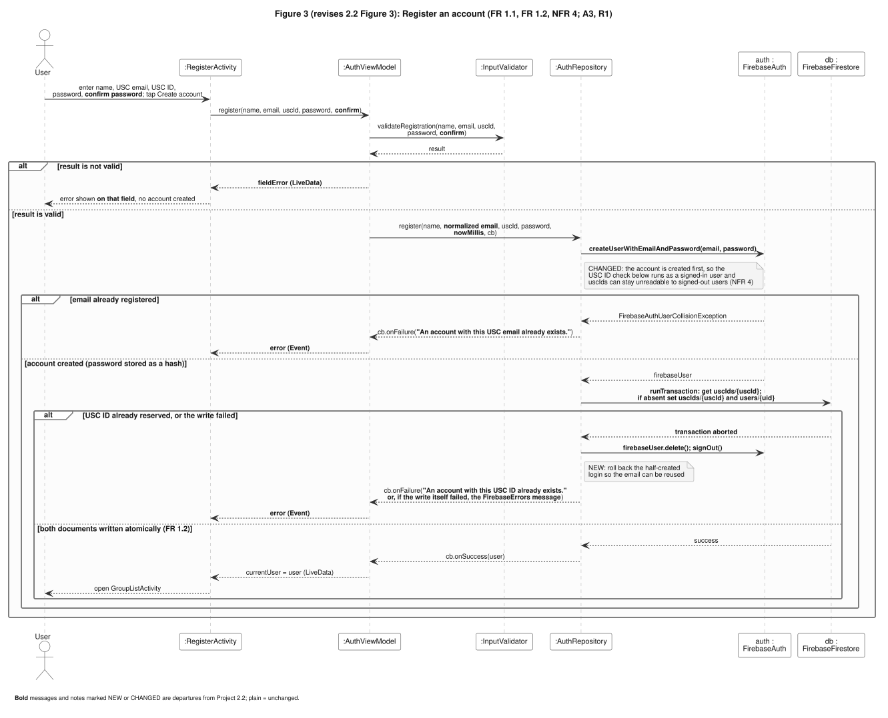
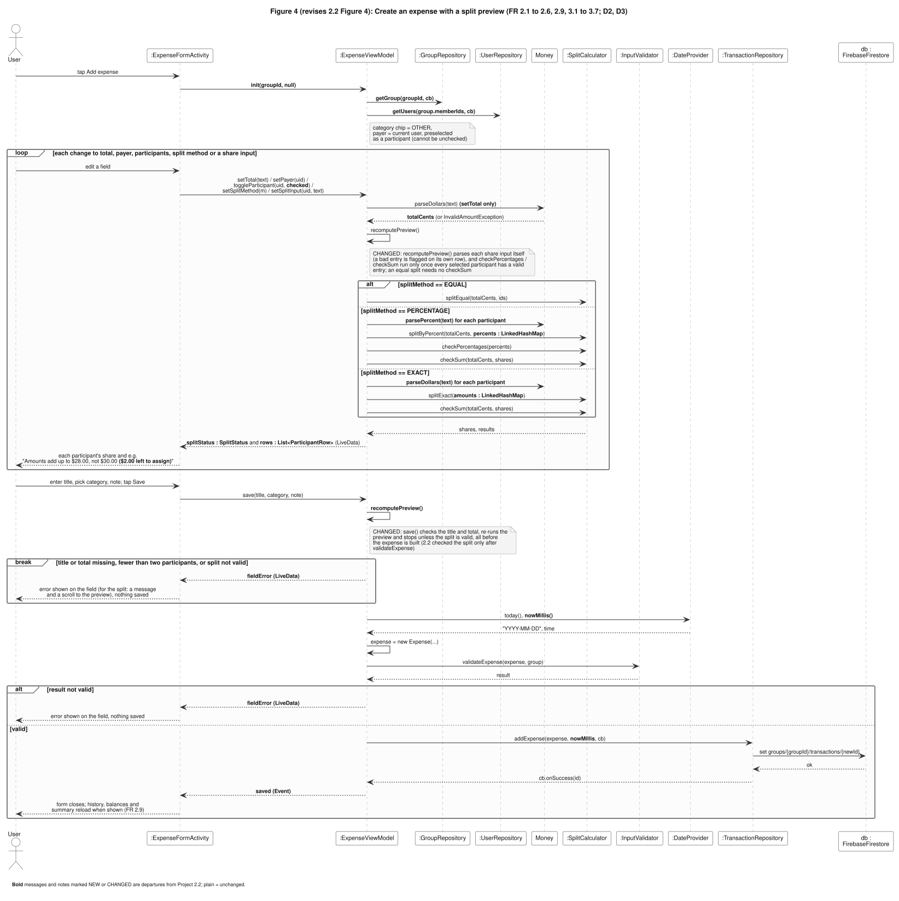
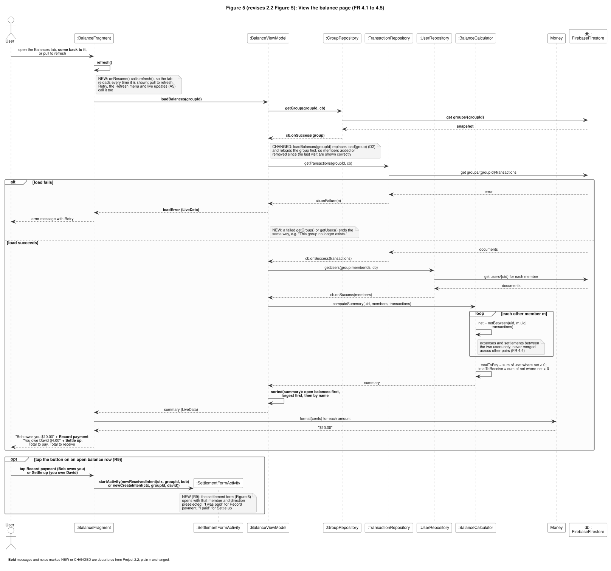
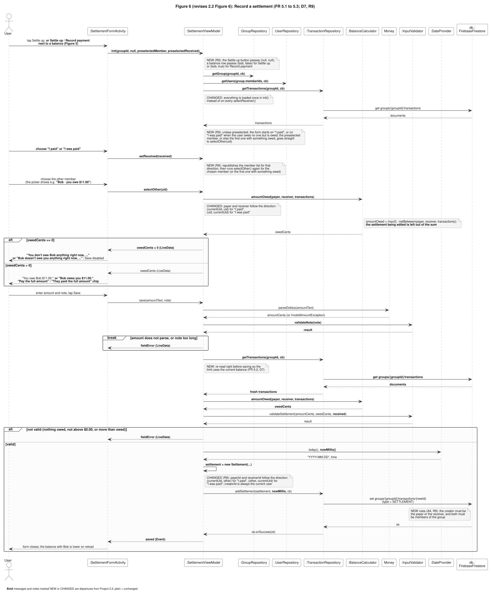
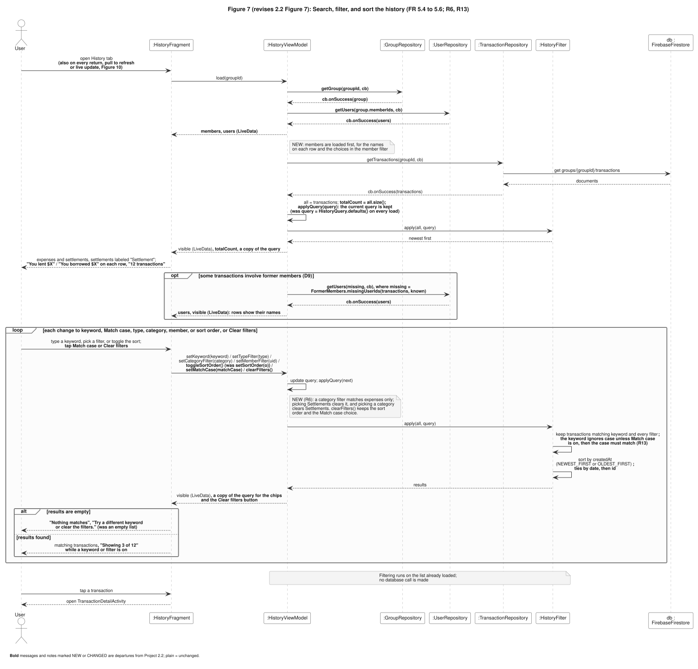
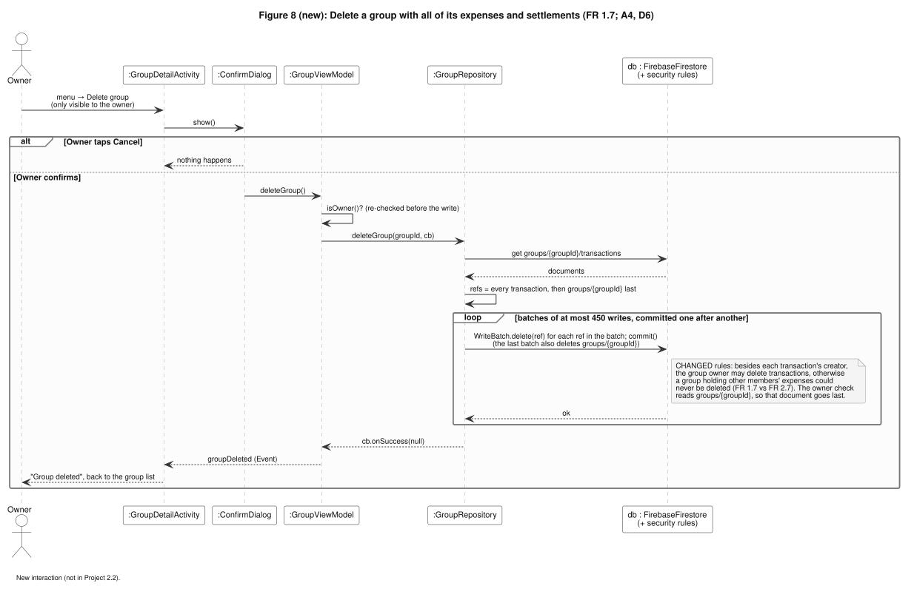
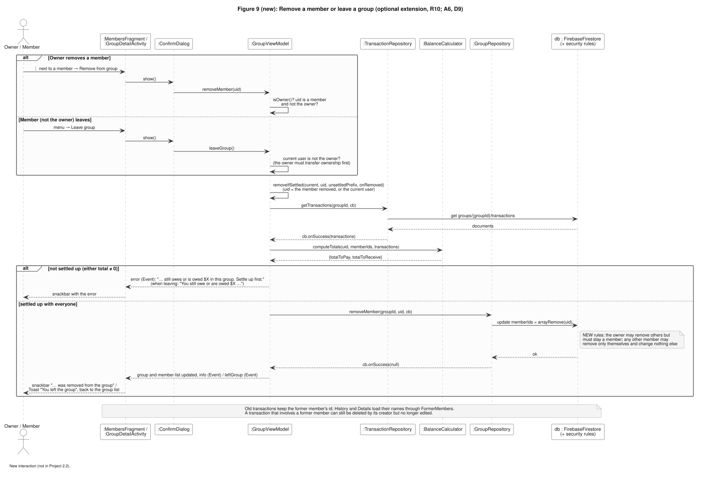
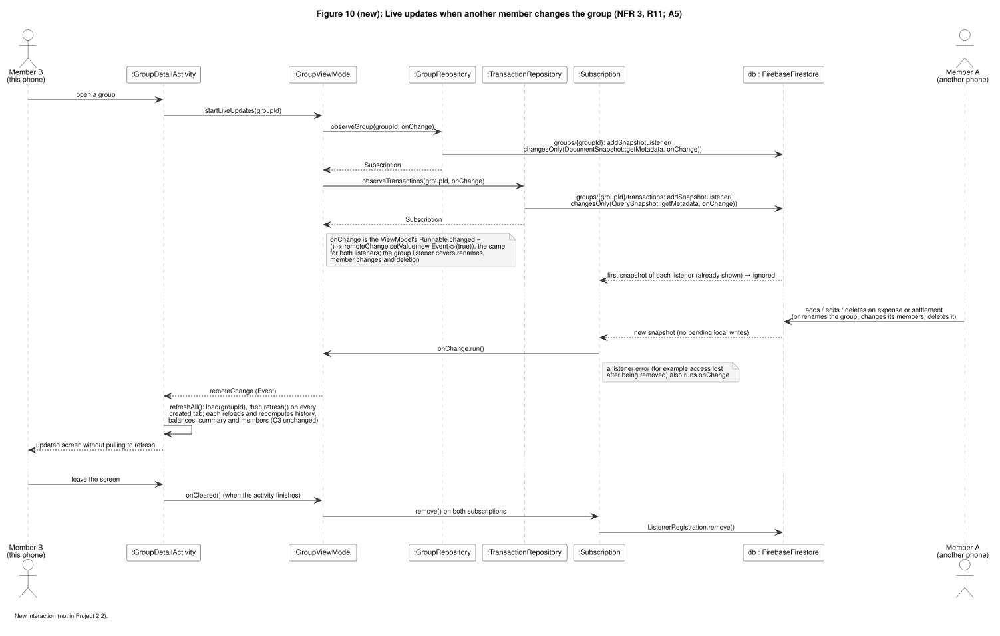
We didn't remove or push back any requirement from Project 2.1. FR 1.1 to FR 5.7 and NFR 1 to NFR 4 are all implemented. What follows are details we had to pin down while building the forms (R1 to R8), one requirement we changed after going through the customer's demo checklist (R9), three optional requirements we added and built (R10, R11, R13), and one we only thought through for a later assignment (R12). For each one we answer the assignment's questions: does it change the design, and if so what and how, and if not, why not.
R1. Password rules (FR 1.1). At least 6 characters, typed twice. Does it change the design? Yes, a little: validatePassword, a five-argument validateRegistration, and a confirmation field on the register screen. Firebase already rejects short passwords, so the client-side rule just gives a nicer message.
R2. Cap on amounts (FR 2.3, FR 5.2). Nothing above $1,000,000.00. Does it change the design? Yes, a little: Money.MAX_CENTS and a check in parseDollars and validateExpense. It catches typos and keeps every amount-times-percentage product comfortably inside a long.
R3. Length limits (FR 1.3, 1.4, 2.2, 5.1). Names and group names up to 50 characters, titles 60, descriptions 200, notes 300. Does it change the design? Only constants in InputValidator and character counters on the fields, and the rules cap profile names too. No class or component changes.
R4. 0% participants in a percentage split (FR 3.4, FR 3.5). Leftover cents still go from the first participant to the last, but anyone at 0% gets skipped. Does it change the design? No. It's only the loop inside splitByPercent; the method signatures are the same, shares still add up exactly to the total, and equal splits are unaffected since nobody is at 0% there.
R5. Every selected participant needs a value (FR 3.3, FR 3.4). Exact and percentage splits can't be saved while a selected participant's box is empty, but 0 is fine. Does it change the design? No. The rule lives in recomputePreview(), which already decided whether the split was valid.
R6. The category filter applies to expenses only (FR 5.6). Settlements don't have a category, so picking a category shows only expenses in it, and picking the Settlements type clears the category filter. Does it change the design? No. It's handled inside HistoryFilter and HistoryViewModel, which already owned filtering.
R7. Settlement limit when editing and at save time (FR 5.2, FR 5.3). The amount owed leaves out the settlement being edited, and the limit is checked again on Save. Does it change the design? Yes: D7.
R8. The owner's group deletion versus creator-only deletes (FR 1.7 versus FR 2.7). The server lets the owner delete any transaction so a whole group can be deleted; the app only uses that for whole groups. Does it change the design? Yes, but only in C6 (one rule, A4) and the batched delete in GroupRepository (D6).
R9. Either side of a payment can record the settlement (FR 5.1, changed). FR 5.1 says the member who owes records the settlement, and that is how we first built it: the payer was always the signed-in user. The customer's demo checklist asks to see a settlement created by the debtor and one created by the recipient, so the member who was paid can now record it too. The settlement form has “I paid” / “I was paid”, and the balance page offers “Record payment” next to each member who owes you, beside the existing “Settle up”. The limit is the same (more than $0.00 and no more than what the payer currently owes the receiver), only the member who recorded a settlement can edit or delete it (FR 5.3), and nobody can record a payment between two other members. Does it change the design? Yes, in C1, C2, C3 and C6. SettlementViewModel keeps a direction (setReceived) and the other member (selectOther) instead of assuming the signed-in user paid, and init takes the member and direction to preselect; ReceiverOption became MemberOption because the other member may now be the payer. InputValidator got a three-argument validateSettlement with wording for the receiver. SettlementFormActivity got the direction buttons and BalanceFragment the Record payment shortcut. In firestore.rules the caller must now be the settlement's payer or its receiver, where it used to have to be the payer (A4). BalanceCalculator and the data model didn't change, because a settlement already stores both its payer and its receiver (Figure 6).
R10. Remove members, leave a group, transfer ownership (added, built). Does it change the design? Yes: new repository and ViewModel methods, withoutMember and withOwner on Group, three new rule cases, and the FormerMembers lookup (A6, D9). One thing we didn't see coming is that transactions involving a former member can only be deleted, not edited.
R11. Live updates (added, built). Does it change the design? Yes, mainly in C2, C4 and C6: the observe methods, Subscription, and the ViewModels that hold on to them (A5). In C1 the group list and group screens only start the updates and reuse their refresh method. NFR 3 is still met the original way as well.
R12. Notifications when you're added to a group or an expense involves you (future). Does it change the design? Yes. It would need a Cloud Function that reacts to new transactions plus Firebase Cloud Messaging, a device token field on users/{uid}, a NotificationRepository in C4, and a permission prompt in C1. The existing components wouldn't change, since the function would read the same documents the app already writes.
R13. Case-sensitive search option (FR 5.6, added, built). The customer's demo checklist asks to see case-sensitive keyword matching. The history search still ignores case by default, and a “Match case” chip makes it exact, so “Pizza” and “pizza” find different records. Does it change the design? Slightly, in C1 to C3 only: HistoryQuery got matchCase, HistoryFilter compares the text exactly when it is set, HistoryViewModel.setMatchCase changes it, and HistoryFragment shows the chip (Figure 7). Nothing else is affected.
On top of the required features, the app has a home dashboard with per-group and overall totals, “you lent / you borrowed” labels on history rows, a Settle up or Record payment shortcut on each balance and “Pay the full amount” / “They paid the full amount” buttons, “Select all” and “Fill evenly” helpers with hints like “$2.00 left to assign”, sharing your balances as text, a month picker that only lists months with expenses and a per-category bar, a result count, “Clear filters” and Match case in the history, a USC cardinal and gold Material 3 theme with dark mode, offline viewing of cached data, clear handling of data that got deleted on another phone, and the two extensions (member management and live updates).
For testing, 74 JUnit tests cover the business logic (./gradlew test), including every worked example from the customer description, and 29 rules tests run against the Firestore emulator. The app builds with ./gradlew assembleDebug. We ran the whole flow, including every item of the customer's demo checklist, on an Android 15 emulator against the local Firebase emulators, using demo data from a script (firestore-tests/seed-demo-data.js), and on two physical devices while recording the demo video. We didn't write automated Espresso UI tests, so the screens were tested by hand as described above.